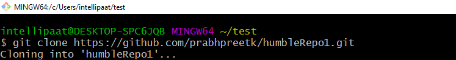

Git Commands
Git is a free, open-source distributed version control system tool designed to handle small to very large projects with speed and efficiency. It has steadily grown from just being a preferred skill to a must-have skill for multiple job roles today. Git has become an essential part of our everyday development process.
In this Git commands tutorial, let’s talk about the top 18 Git commands that are useful for working with Git.
Here are the top 18 Git commands list discussed in this tutorial:
- git init
- git add
- git commit
- git status
- git push
- git clone
- git branch
- git checkout
- git log
- git diff
- git merge
- git rebase
- git reset
- git pull
1. git init
Usage: git init [repository name]
We have to navigate to our project directory and type the command git init to initialize a Git repository for our local project folder. Git will create a hidden .git directory and use it for keeping its files organized in other subdirectories.
2. git add
Usage (i): git add [file(s) name]
This will add the specified file(s) into the Git repository, the staging area, where they are already being tracked by Git and now ready to be committed.

Usage (ii): git add . or git add *
This will take all our files into the Git repository, i.e., into the staging area.
We can use this command as git add -A as well.
Note : We will have to commit our files after we add them to the staging area.
3. git commit
Usage: git commit -m “message”
This command records or snapshots files permanently in the version history. All the files, which are there in the directory right now, are being saved in the Git file system.
4. git status
Usage: git status
This command will show the modified status of an existing file and the file addition status of a new file, if any, that has to be committed.
5. git push
Usage: git push origin [branch name]
Suppose, we have made some changes in the file and want to push the changes to our remote repository on a particular branch. By using the command ‘git push,’ the local repository’s files can be synced with the remote repository on Github.

6. git clone
Usage: git push origin [branch name]Usage: git clone [URL]
Suppose, we want to work on a file that is on a remote Github repository as another developer. How can we do that? We can work on this file by clicking on Clone or Download and copying the link and pasting it on the terminal with the git clone command. This will import the files of a project from the remote repository to our local system.
To create a local folder, we have to use the following command:
mkdir [directory- name]
cd [directory- name]
git clone [URL]
Now, paste the copied link along with the git clone command as shown below:

Note : Here, we don’t have to use the git remote add origin command because we have already cloned the remote repository in the local directory. Now, if we push any new file, it knows where it has to go.
7. git branch
Usage (i): git branch [name-of-the-branch]
When multiple developers are collaborating on a project or repository, branches become essential for managing different workspaces. Using this command, we can create a new branch (for example, ‘branch1’). This allows developers to work independently on their respective branches, making changes and commits without affecting the main branch or other branches.
Usage (ii): git branch -D [name-of-the-branch]
Likewise, to delete a branch, we utilize the “git branch -D” command. This enables us to remove a specific branch (e.g., ‘name-of-the-branch’) that is no longer needed, cleaning up the repository and reducing clutter.